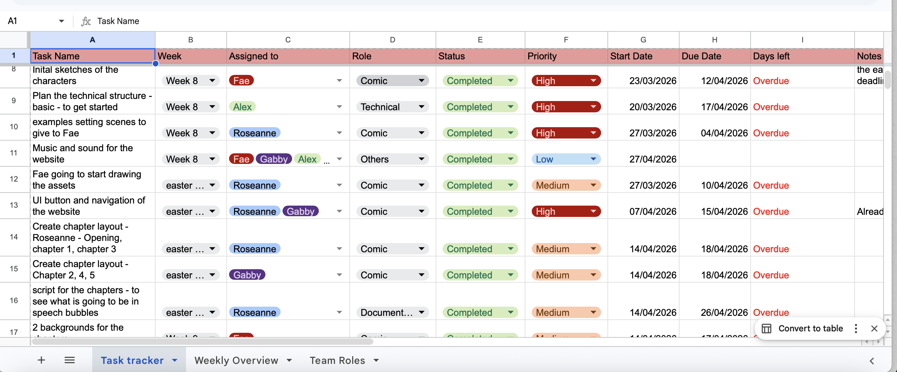

03 - Process & Collaboration
Running a four person team like a small agile studio
As documentation lead, I worked alongside 4 peers to keep a 14-week project spanning visual art, writing, interface design and front-end development moving in parallel rather than stalling on a single critical path. We split the work into five sprints, letting design, scripting and development progress together instead of waiting on each other:
- Sprint 1 — Planning & Concept (Weeks 4–5): evaluated five project concepts as a team, voted to combine a murder mystery with a comic-style story adaptation, and defined the cast and their relationships.
- Sprint 2 — Skeleton (Weeks 6–7): roles were formalised and I worked with a peer on paper prototypes and low-fidelity wireframes in Balsamiq, which we then carried into high-fidelity Figma prototypes covering the introduction page, perspective selection and case file.
- Sprint 3 — Narrative & Comic Production (Easter–Week 8): each of us scripted assigned chapters across both perspectives, covering scene description, dialogue and panel sequence.
- Sprint 4 — Integration (Weeks 9–11): the homepage, chapter layouts and perspective pages were built out in HTML/CSS/JS.
- Sprint 5 — Testing & Submission (Weeks 12–14): artwork, interface and development came together into a working build; I compiled the copyright appendix ahead of the 27 May deadline.


From Sprint 2 onwards, I maintained the team's shared task tracker in Google Sheets. Every task was assigned to a named team member, given a priority level and a weekly status — not started, in progress, completed or blocked — so anyone could see where the project stood at a glance and step in early if something was stuck.

The task tracker I maintained to allocate and monitor workload across all five sprints
Alongside the tracker, I recorded the minutes for every weekly meeting, capturing decisions and action items so that choices made informally — over WhatsApp, in sub-meetings, or in the room — had one place the whole team could check back against.
Reflection: working within developer capabilities
A layout that looks correct in Figma doesn't automatically behave the same way once it's built on a framework like Bootstrap. We ran into this directly when Bootstrap's utility classes overrode the custom clamp() sizing on the back button, and again during testing when the case file wouldn't centre correctly in HTML/CSS. Adopting a 12-column grid early and carrying it consistently from wireframe, to Figma, to CSS reduced a lot of this friction — but it also meant accepting that some interface decisions had to be made with the developers' constraints in mind from the start, rather than handed over as a finished design afterwards. If I ran this process again, I'd bring development into the wireframing stage even earlier, so technical limits are part of the conversation from day one instead of something we discover during integration.